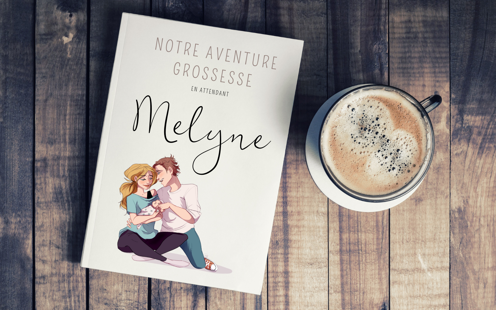

Porter un enfant, c'est promettre au monde
un peu d'éternité
.
On vous explique...
Notre album vous permet d'enregistrer facilement et pas à pas l'histoire de votre grossesse grâce à un semainier digital créé pour remplir les informations dont nous avons besoin pour réaliser votre Aventure de grossesse.
Future Maman, futur Papa vous allez adorer remplir ce carnet chaque semaine, votre petit moment à 2 en attendant que bébé pointe le bout de son nez. Apportez vos souvenirs à travers une photo ou un petit mot.
Un journal de bord joliment illustré, à offrir ou à s'offrir, qui s'adapte aux six couleurs disponibls de votre avanture de grossesse.
Besoin de plus d'informations? Contactez-nous
